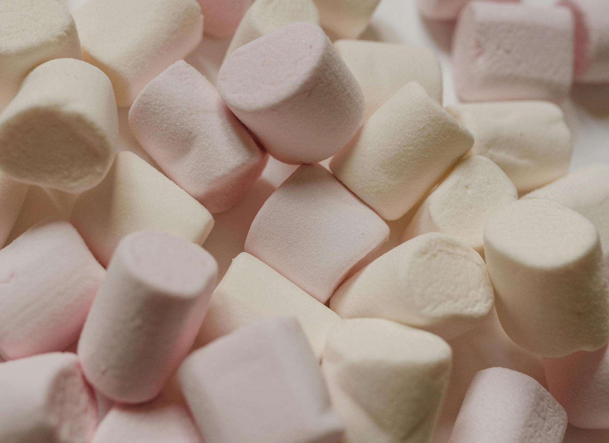
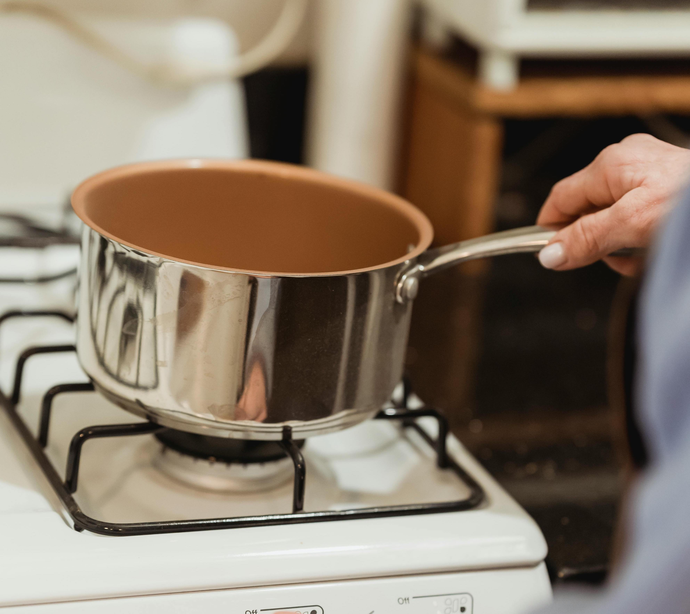

A classic childhood recipe we all know and love. With just three simple ingredients, this tasty treat is both easy and delicious. Feel free to give it an extra pop of flavor by customizing and adding your own twist to this timeless dessert. Whether you decide to add peanut butter or chocolate chips, it is sure to come out delicious.
Continental Tasty Breakfast With Energy Bars and Cakes Pexels.
Step 1: Purchase Ingredients

Sweet White Marshmallows Pexels.
Ingredients
- 5 cups of Rice Krispies
- 4 cups of marshmallows
- 1/4 cups of butter
Step 2: Assemble Ingredients

Crop Unrecognizable Housewife Placing Saucepan on Stove Pexels.
Instructions
- Start by melting 1/4 stick of butter on medium heat
- Stir in 4 cups of marshmallowsand mix until melted
- Stir in 5 cups of Rice Krispies cereal until well combined
Step 3: Serve and Enjoy

Delighted Woman Cooking Pexels.
Serving Instructions
- Evenly spread cereal mixture into a dish
- Let cool for 15 minutes
- Serve in equal squares and enjoy
Step 4: Share This Recipe
Laughing diverse friends with smartphones in park
Pexels.
Subscribe For More!
Share this recipe on all platforms if you found it to be tasty and exciting. Share an old childhood keepsake with your loved ones one recipe at a time. Be sure to subscribe to our newsletter for more easy and delicious dessert recipes.